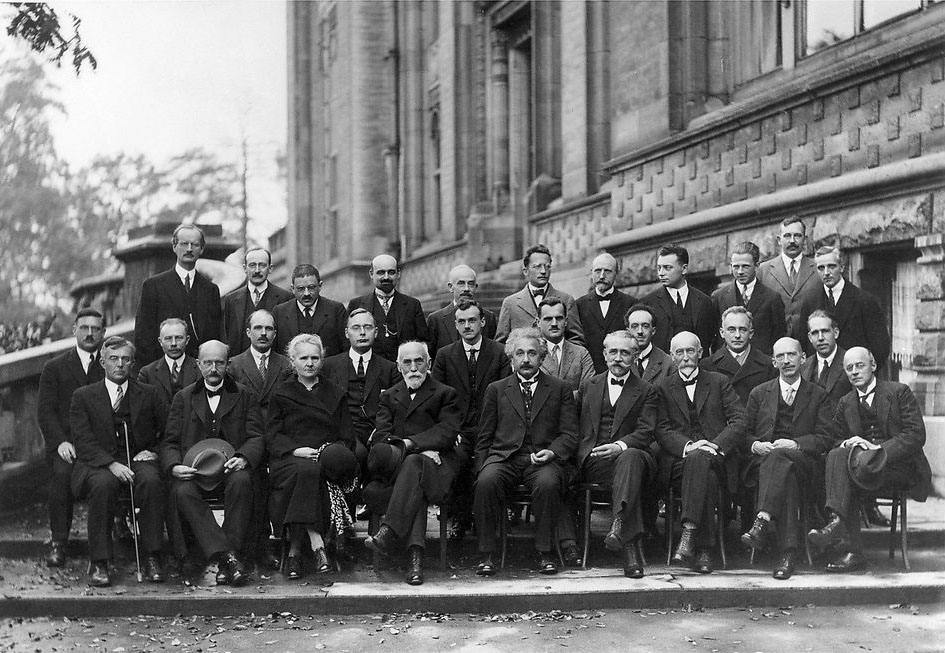
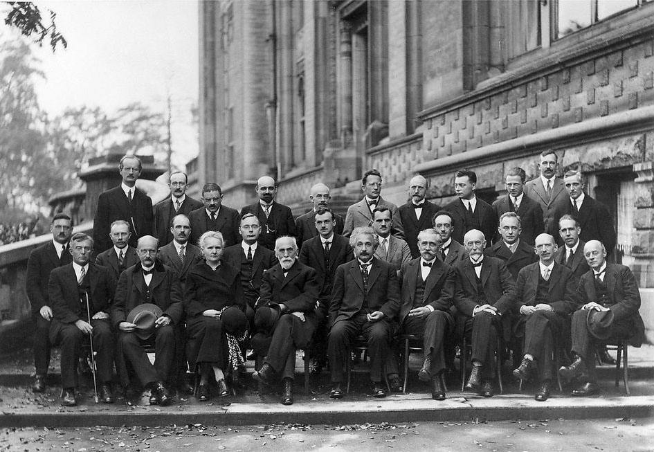

埃德·斯塔福特
Ed Stafford
导演 | 演员 | 编剧
1975-12-26
埃德·斯塔福德（Ed Stafford，1976年-），出生于英国彼得伯勒，前驻阿富汗英国陆军上尉，被誉为“现代鲁宾逊”。2010年4月，斯塔福德独自穿越亚马逊河，耗时860天，创下吉尼斯世界纪录：第一个走完亚马逊全程的人。这段经历被写成《徒步亚马孙》一书，并被“探索”频道拍成纪录片。2011年，皇家苏格兰地理学会授予斯塔福德蒙戈·帕克奖。2013年，斯塔福德在南太平洋一个荒无人烟的小岛，独自生活60天。2014年-2019年，参加的节目《单挑荒野第三季》《求生之路》《街道流浪60天》等相继播出。2020年4月24日，参加的野外生存类节目《决胜荒野之华夏秘境》在哔哩哔哩播出。